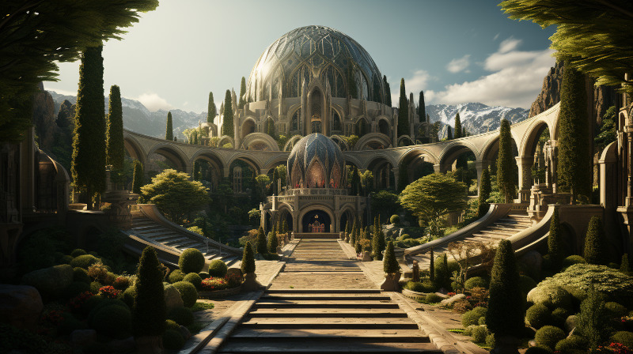

Figure 1: The Main Entrance to the ancient city Aeritha (a.k.a the Athelorion ruins)
Áyliaremma Elves made an ancient Amearen ruin, now known as the Athelorion ruins, their capital city named Aeritha. Bayetti Falasha’s “The Ancient Ones” speaks much of the ancient city, and is believed to have encrypted much of the ancient Elven knowledge of the Amearans in her poetic stanzas. There is a rumor that there is a vast transporter within that can leeds to the place of the dead.